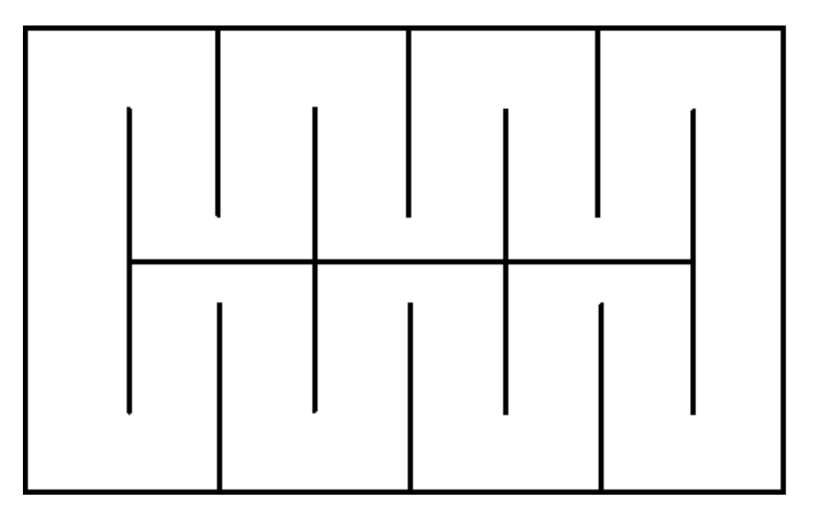
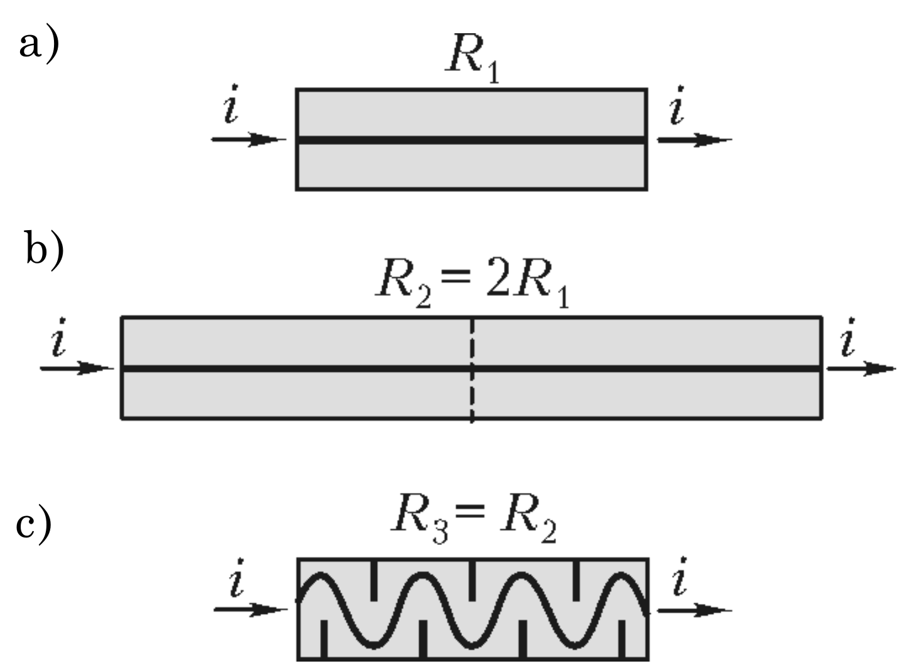
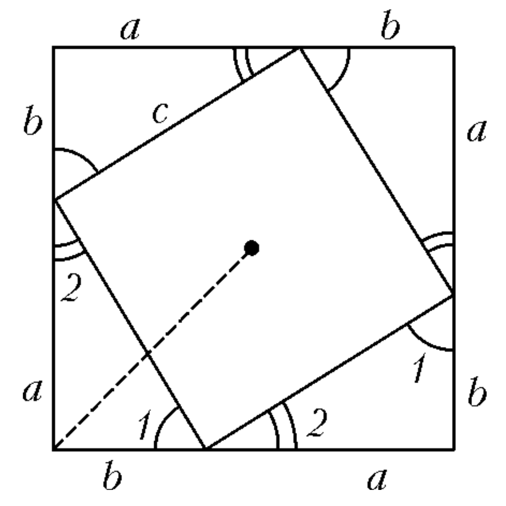
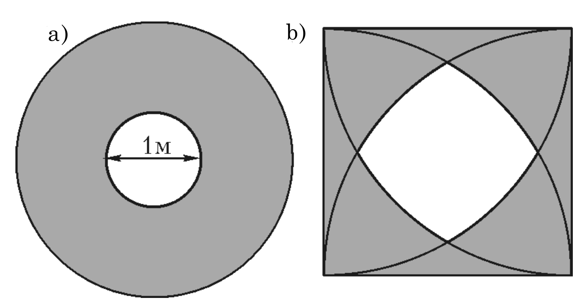
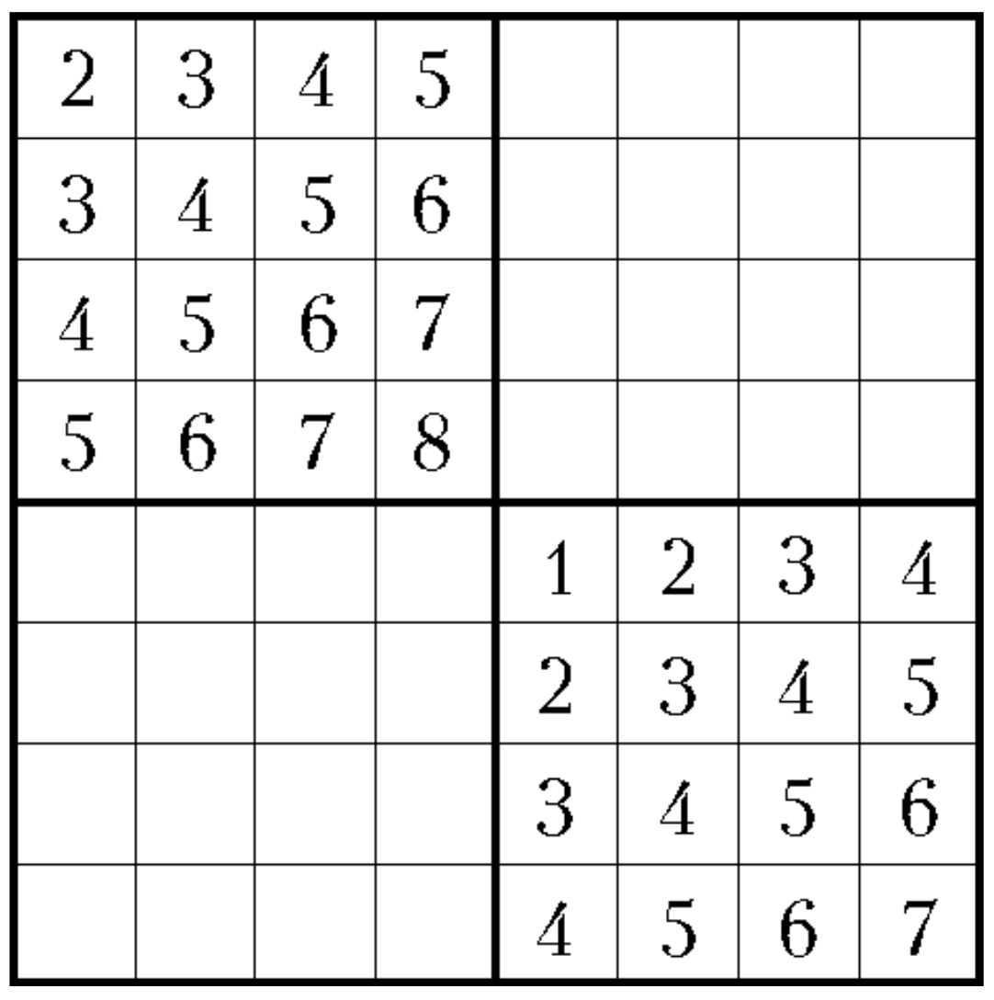
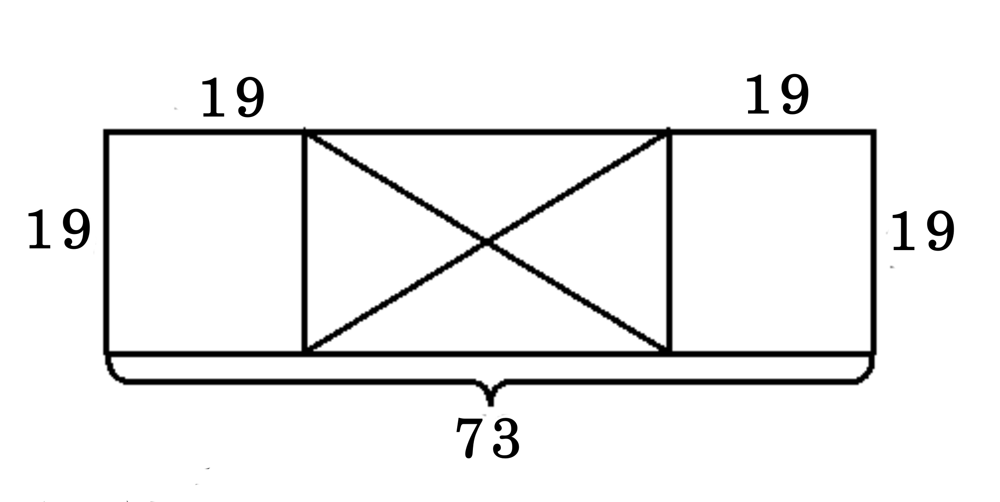
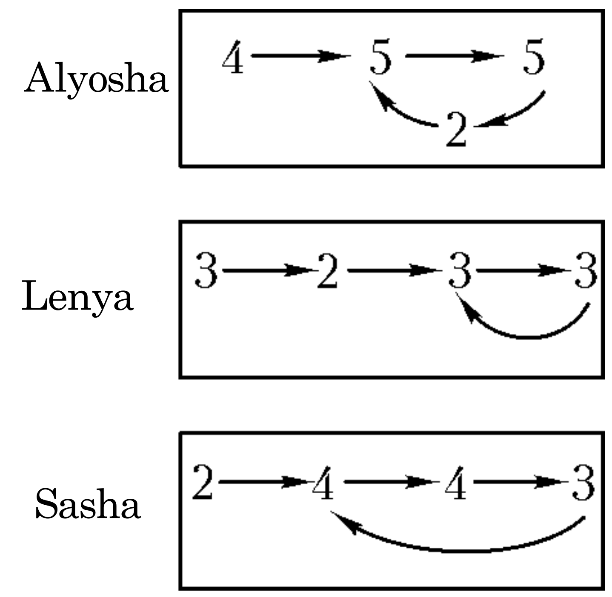
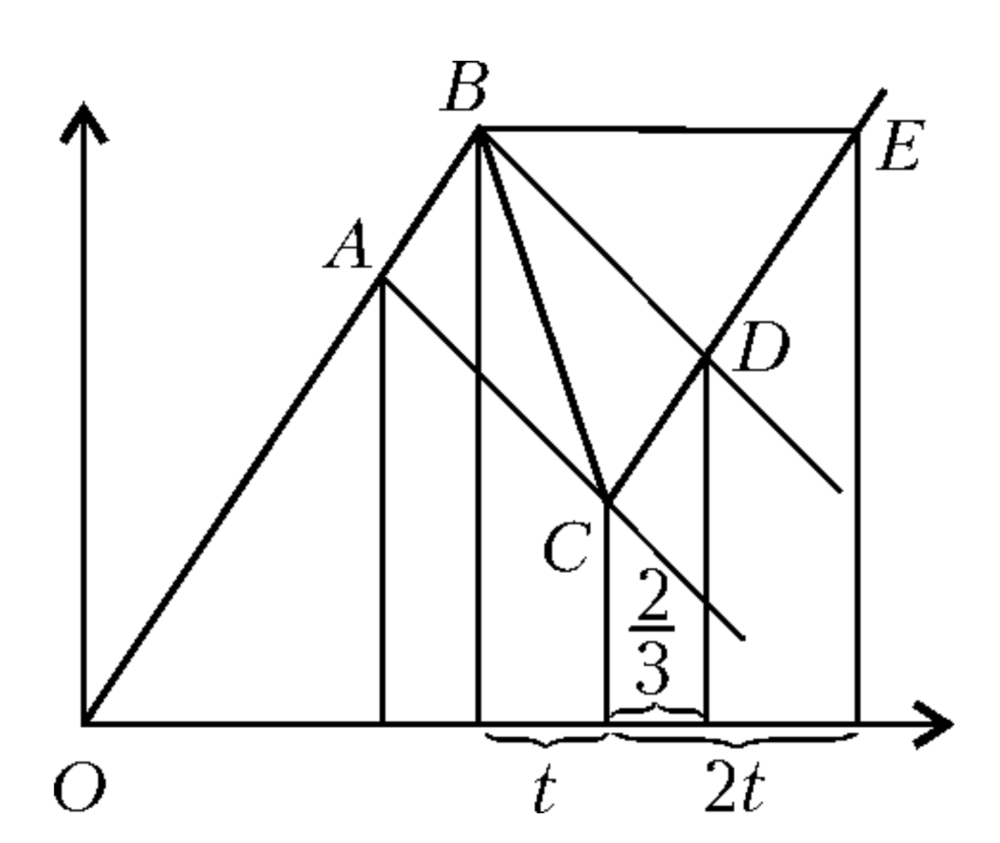
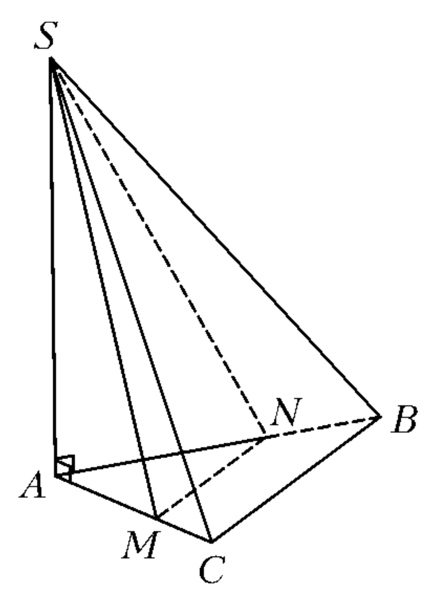

1 INTRODUCTORY PROBLEMS
1-1. Is it possible to cut a hole in a sheet of paper torn from a school notebook through which an adult can pass?
1-2. In the equation \((x^2 + \ldots)(x+1) = (x^4 + 1)(x+2)\) one number is erased and replaced with dots. Find the erased number if it’s known that one of the roots of this equation equals one.
1-3. Petya spends 1/3 of his time on school, 1/4 on playing football, 1/5 on listening to records, 1/6 on watching TV, 1/7 on solving math problems. Is it possible to live like this?
1-4. Four numbers were added in pairs, resulting in six sums. The four smallest of these sums are known: 1, 5, 8, and 9. Find the two remaining sums and the original numbers themselves.
1-5. What is the maximum number of Sundays that can be in a year?
1-6. Four girls - Katya, Lena, Masha, and Nina - participated in a concert. They sang songs. Each song was performed by three girls. Katya sang 8 songs - the most, and Lena sang 5 songs - the least. How many songs were sung in total?
1-7. Three merchant wives - Olimpiada, Sosipatra, and Poliksena - were drinking tea. If Olimpiada had drunk 5 cups more, she would have drunk as much as the other two combined. If Sosipatra had drunk 9 cups more, she would have drunk as much as the other two combined. Determine how many cups each drank and what their patronymics are if it’s known that Uvarovna drank tea with sugar cubes, the number of cups of tea drunk by Titovna is divisible by three, and Karpovna drank 11 cups.
1-8. A lady was checking in luggage: a sofa, a suitcase, a carpetbag, a painting, a basket, a hatbox, and a small dog. The sofa weighed as much as the suitcase and carpetbag together, and as much as the painting and hatbox together. The painting, basket, and hatbox weighed equally, each of them more than the dog. When unloading the luggage, the lady claimed that the dog was not of the right breed. Upon inspection, it turned out that the dog outweighs the sofa if a carpetbag or suitcase is added to its side of the scale. Prove that the lady’s claim was justified.
1-9. A motorcyclist and a cyclist departed simultaneously from point A to point B. After covering a third of the way, the cyclist stopped and only continued when the motorcyclist had a third of the way left to B. The motorcyclist, upon reaching B, immediately turned back. Who will arrive earlier: the motorcyclist at A or the cyclist at B?
1-10. The lengths of the catheti of a right-angled triangle are \(a\) and \(b\). A square is constructed on its hypotenuse as a side, outside the triangle. Find the distance from the vertex of the right angle of the triangle to the center of the square.
1-11. During spring, Oblomov lost 25% of his weight, then during summer he gained 20%, during autumn he lost 10%, and during winter he gained 20%. Did he lose or gain weight over the year?
1-12. Ivan Alexandrovich Khlestakov was invited to manage a department and over three days was sent 35,000 couriers. If on the first day twice as many couriers had been sent as were actually sent, the total number of couriers would have been the fifth power of the number by which more couriers were sent on the third day than on the second. How many couriers were sent each day? 1-13. After the performance of “The Inspector General,” the following dialogue took place:
Bobchinsky: It was you, Pyotr Ivanovich, who first said “Eh!”. You said so yourself.
Dobchinsky: No, Pyotr Ivanovich, I didn’t say that. It was you who first ordered salmon. You said “Eh!”. And I have a whistling tooth in my mouth.
Bobchinsky: It’s true that I ordered salmon first. And it’s true that you have a whistling tooth. But still, it was you who first said “Eh!”.
Find out who first said “Eh!” if it’s known that an even number of the nine statements made in this dialogue are true.
1-14. a) A grasshopper sits on the floor by the wall of a circular room with a diameter of 3 m. Each of its jumps is 2 m long. It starts jumping. Which points in the room can it reach?
- The same question if the room is square with a side of 2 m, and the grasshopper initially sits in the corner.
1-15. A new chess piece “giraffe” moves in an “L” shape, four squares in one direction and five squares in another. What is the maximum number of giraffes that can be placed on a chessboard so that no one can attack another, no matter how many moves it makes?
1-16. Four boys - Alyosha, Borya, Vanya, and Grisha - competed in a race. The next day, when asked about their places, they answered:
Alyosha: I was neither first nor last. Borya: I wasn’t last. Vanya: I was first. Grisha: I was last.
It’s known that three of these answers are correct, and one is wrong. Who lied? Who was first?
1-17. Cities A and B are located on a river 10 km apart. What will take more time for a steamboat: to sail from A to B and back, or to sail 20 km on a lake?
1-18. Andrey skis faster than Vitya, but slower than Zhenya. They started running simultaneously on a circular track from the same place in the same direction and stopped at the moment when all three were in the same place. During this time, Zhenya overtook Vitya 13 times. How many overtakes were there in total?
1-19. A steel plate measuring 73 × 19 cm was outlined with a pencil on paper. Find the center of the resulting rectangle, having only this plate and a pencil at your disposal.
1-20. Prove that in any company, there will be two people who have an equal number of acquaintances in this company. (If A knows B, then B knows A.)
1-21. A sequence of numbers is constructed according to the following law. The first number is 7, then after each number stands the sum of the digits of its square, increased by one. So, in the second place is the number 14, because \(7^2 = 49\), and \(4 + 9 + 1 = 14\). The third place is occupied by the number 17, and so on. What number stands in the 1000th place?
1-22. Three brothers study in the 9th “G” class: Alyosha, Lenya, and Sasha. The teacher noticed that if one of them gets two fours or two threes in a row, then he studies poorly and gets a three; if he gets two fives in a row, he completely stops studying and gets a two, and if he gets two different grades, the next one will be the higher of them. At the beginning of the semester, Alyosha got grades 4 and 5, Lenya - 3 and 2, Sasha - 2 and 4. What final grades will they get for this semester if the teacher gave each of them 30 grades, and the final grade is the nearest integer to the arithmetic mean of the received grades?
1-23. A mathematician was walking home upstream with a speed 1.5 times greater than the stream’s speed, holding a hat and a stick in his hands. On the way, he threw the hat into the stream, mistaking it for the stick. Soon, noticing the mistake, he threw the stick into the stream and ran back with a speed twice as fast as he was walking forward. After catching up with the floating hat, he instantly took it out of the water, turned around, and walked home as if nothing had happened, at his previous speed. 40 seconds after he caught up with the hat, he met the stick floating towards him. How much earlier would he have arrived home if he had walked forward all the time?
1-24. Is there an integer that, when its first digit is erased, decreases: a) by 67 times; b) by 58 times?
1-25. A quarter of the participants in a chess tournament were grandmasters, the rest were masters. Each pair of participants played against each other once. A win was awarded one point, a draw - half a point, a loss - zero. The masters scored 1.2 times more points in total than the grandmasters. How many masters and how many grandmasters were there?
1-26. Does there exist a quadrangular pyramid in which two opposite lateral faces are perpendicular to the base plane?
1.1 Answers and Hints
Problem 1-1. Answer: It’s possible. An approximate method is shown in Figure 1. The number of bends in the strip can be made more or less, depending on the size of the person who needs to pass through.
∇ The solution to problem 1-1 - Figure 1 - is directly related to electronic technology.

Let’s say (Fig. 2,a) an electric current i passes into the metal through a resistance (resistor) of value R₁, and then exits from it. How to double the resistance? The natural idea is to double its length (Fig. 2,b).

In electronic devices, it was necessary to multiply resistances many times, which would lead to equipment of gigantic size and weight. Therefore, miniaturization is one of the main goals of the electronics industry: after all, no one will walk around with a cell phone the size of a suitcase!
Dr. Felix Zandman (1927-2011) proposed a completely different idea, thanks to which, without increasing the size of the resistor, it’s possible to multiply the resistance many times (Fig. 2,c - compare with the figure for the solution to problem 1-1!). This brilliant idea came to him during lunch, and the drawing on the lunch napkin, materializing the idea, is now exhibited in a museum. This idea is one of the most important inventions of the 20th century in the field of electronics, as it led to the creation of miniature resistors. It and a number of other ideas allowed F. Zandman to found and successfully lead the world-famous company Vishay Intertechnology (see [123]). Problem 1-2. Answer: 2. To find the erased number, it’s sufficient to substitute x = 1 into the equation.
Problem 1-3. If Petya can do several things simultaneously, then it’s possible; if not, then it’s impossible: the sum of the given numbers is greater than one.
Problem 1-4. Answer: The two remaining sums are 12 and 16, and the numbers themselves are either (-1), 2, 6, and 10, or (-3/2), 5/2, 13/2, and 19/2.
Problem 1-5. Answer: 53. Among any seven consecutive days, there is always one Sunday. Since 365 = 52 * 7 + 1, 366 = 52 * 7 + 2, in any year there are 52 sets of seven days (weeks) and a remainder of 1 or 2 days. In each set of seven, there is exactly one Sunday, and in the remainder - one or none. In total, there are no more than 53 Sundays. An example of a year when there were 53 Sundays is 1984. The same number of Sundays was in 1989, 1995, 2000.
Problem 1-6. Answer: 9 songs. If each performer is given a candy for each song, the total number of prize candies will be divisible by three.
Problem 1-7. Answer: Olimpiada Karpovna drank 11 cups, Sosipatra Titovna - 9 cups, Poliksena Uvarovna - 7 cups.
Problem 1-8. Let’s denote the masses of objects by the first letters of their names: D - mass of the sofa, C - suitcase, B - carpetbag, P - painting (as well as basket and hatbox - they weighed the same), S - small dog. If the lady’s claim is unjustified, then:
D = C + B = 2P, P > S, S + B > D, S + C > D. Hence S > C, S > B, 2P = C + B < 2S < 2P - contradiction.
Problem 1-9. Answer: The cyclist will arrive earlier. Since the cyclist covered a third of the way before the motorcyclist covered two-thirds, the cyclist’s speed is more than half the speed of the motorcyclist. Problem 1-10. Answer: \(\frac{\sqrt{2}}{2}(a + b)\). Attach triangles identical to the given one to all sides of the square externally, so that their catheti form extensions of each other - see Figure 3. The catheti of these triangles form a new square whose center coincides with the center of the original one. The sought distance is equal to half the diagonal of the new square, which leads to the answer.

Problem 1-11. Answer: He lost weight. If at the beginning of spring Oblomov weighed M kg, then by the end of the year he weighed 0.75 * 1.2 * 0.9 * 1.2M = 0.972M kg.
Problem 1-12. Answer: 24049, 5471, 5480 couriers on the first, second, and third days respectively. The only fifth power of an integer between 35,000 and 70,000 is \(9^5\).
Problem 1-13. Answer: Bobchinsky. By crossing out two equivalent statements, we don’t change the parity of the number of true statements among the remaining ones, and by crossing out two opposite statements, we change the parity.
Problem 1-14. a) Answer: All points of the ring with inner diameter 1 m and outer diameter 3 m (in Fig. 4a, this ring is shaded). It’s clear that the grasshopper can’t get closer to the center of the room than half a meter. To show that the grasshopper can reach any point in the specified ring, we first need to show that it can reach any point along the wall.
- Answer: See Figure 4b, where the sought set of points is shaded. It represents the entire room, except for the intersection of four circles with a radius of 2 m centered at the corners of the room.

Problem 1-15. Answer: 16 giraffes. Figure 5 shows how to place 8 giraffes: each of them can be placed in any cell with its number. The other 8 giraffes can be placed symmetrically to the first eight.

Problem 1-16. Answer: Vanya lied; Borya was first. If we assume that Alyosha lied, then it turns out that he was either first or last. But then either Vanya or Grisha also lied, which contradicts the condition that only one of the boys lied. Similarly, all other possibilities are considered.
Problem 1-17. Answer: More time is required for the river journey. Let the steamboat’s speed be u and the current’s speed be v. If u ≤ v, the steamboat won’t sail upstream at all, and if u > v > 0, the solution reduces to proving the inequality:
\(\frac{10}{u+v} + \frac{10}{u-v} > \frac{20}{u}\)
Problem 1-18. Answer: 25. The 13 moments when Zhenya overtook Vitya divide the total movement time into 14 intervals, and during each interval, Zhenya was ahead of Vitya by exactly one lap. So Zhenya made 14 more laps than Vitya. Let Andrey make k more laps than Vitya. By condition, 0 < k < 14. Reasoning similarly, we get that Andrey overtook Vitya k - 1 times. But Andrey made 14 - k fewer laps than Zhenya, and therefore Zhenya overtook him 13 - k times. In total, there were 13 + (k - 1) + (13 - k) = 25 overtakes.
Problem 1-19. On each of the long sides of the rectangle, mark 19 cm from the ends. We get a 35×19 rectangle with the same center as the original one, and in it we can already draw diagonals that intersect at the center (Fig. 6).

Problem 1-20. Let there be k people in the company. Then each of them has no less than zero and no more than k - 1 acquaintances in this company. If we assume that the numbers of acquaintances for all people are different, we get a contradiction. Indeed, then one has zero acquaintances, the second has one, the third has two, and so on, finally, the last one has k - 1 acquaintances. But this means that the last one knows everyone, in particular, the first one, who wasn’t supposed to know anyone!
Problem 1-21. Answer: 11. Let’s calculate the first few terms of the given sequence: 7; 14; 17; 20; 5; 8, 11; 5; … The five repeated, which means there will be a period consisting of three numbers: 5, 8, 11.
Problem 1-22. Answer: Alyosha and Sasha will get grades of 4, and Lenya will get a grade of 3. Starting to write out the grade sequences for each of the boys, we find that from a certain point they repeat periodically. This is schematically shown in Fig. 7. After calculating the average values of the grades, we get the answer.

Problem 1-23. Answer: Two and a half minutes. Let v be the speed of the stream, and t be the time in minutes that he ran back.
Then the walking speed is \(\frac{3}{2}v\), the running speed is 3v, and the distance he ran back is 3vt.
Further, the distance he walked for 40 seconds = \(\frac{2}{3}\) minutes forward from where he fished out the hat to where he met the floating stick is \(v \cdot \frac{2}{3} = \frac{2}{3}v\), and the distance that the stick floated until he met it is \(v(t + \frac{2}{3})\).
Consequently, we can write the equation: \(3vt = \frac{2}{3}v + vt + \frac{2}{3}v\)
After canceling v, we get that \(t = \frac{5}{6}\) minutes.
Now let’s calculate the lost time. It consists of two parts, of which the first (t) is half the second (2t): how long he ran back and how long he walked forward - this is the same distance, and in total \(3t = \frac{15}{6} = \frac{5}{2} = 2.5\) minutes.
Let’s consider another solution method using the same notations, but based on comparing distances not in a stationary reference frame associated with the shore, but in a moving one - associated with the moving stick.
After the mathematician threw the stick, he moved away from it by a distance equal to \((3v - v) \cdot t\), and after he fished out the hat, he approached the stick by the same distance, equal to \(\frac{3}{2}v + v \cdot \frac{2}{3}\). Composing the equation:
\((3v-v) \cdot t = \frac{3}{2}v + v \cdot \frac{2}{3}\)
and solving it, we get that \(t = \frac{5}{6} = 2.5\) minutes.
Along the shore, the mathematician ran for t minutes at one speed, and then walked the same distance in the opposite direction at half the speed, so he walked back for 2t minutes, and the lost time is 3t minutes.
If we consider the graphs of the movement of the mathematician - OBCE, the hat - AC, and the stick - BD (see Fig. 8), we can better understand the situation described in the problem.

All sections of the graphs are line segments, as the movement occurred at a constant speed on each of them.
Point A of the graph corresponds to the moment when the mathematician threw the hat, AC is the graph of the hat’s movement. Point B corresponds to the moment when the mathematician threw the stick, BD is the graph of the stick’s movement.
Problem 1-24. Answer: a) exists, for example 7125; b) does not exist. Let x be the digit to be crossed out, k be the number of remaining digits, y be the number remaining after crossing out. Then \(x \cdot 10^k + y = 58y\), from which \(x \cdot 10^k = 57y\). In the last equation, the right side contains a prime factor 19, which the left side cannot contain.
Problem 1-25. Answer: 9 masters and 3 grandmasters. If n is the number of participants in the match, then \(\frac{n(n-1)}{2}\) is the total number of points in this match.
Problem 1-26. Answer: exists. An example of such a pyramid is shown in Figure 9. It is constructed as follows. Take a triangular pyramid SABC, where the lateral edge SA is perpendicular to the base plane. Its lateral faces SAC and SAB are perpendicular to the base (as planes passing through the perpendicular AS to the base). Now, let’s take arbitrary points M and N on the sides AC and AB of the base respectively. The pyramid SMNBC satisfies the condition of the problem.
